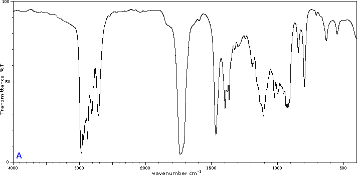

To illustrate the usefulness of infrared absorption spectra, examples for five C4H8O isomers are presented below their corresponding structural formulas. The five spectra may be examined in turn by clicking the "Toggle Spectra" button. Try to associate each spectrum ( A - E ) with one of the isomers in the row above it. When you have made assignments check your answers by clicking on the structure or name of each isomer.
